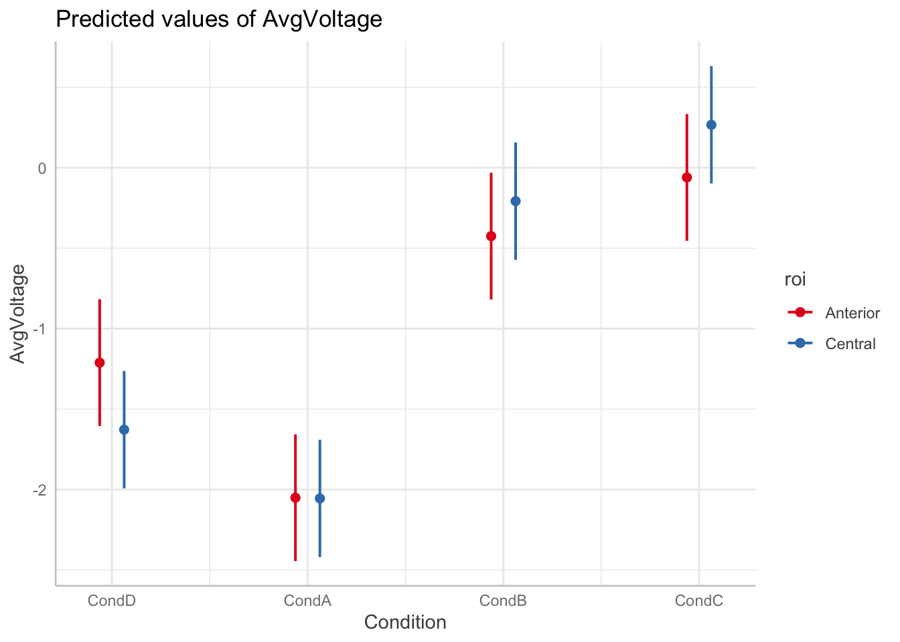
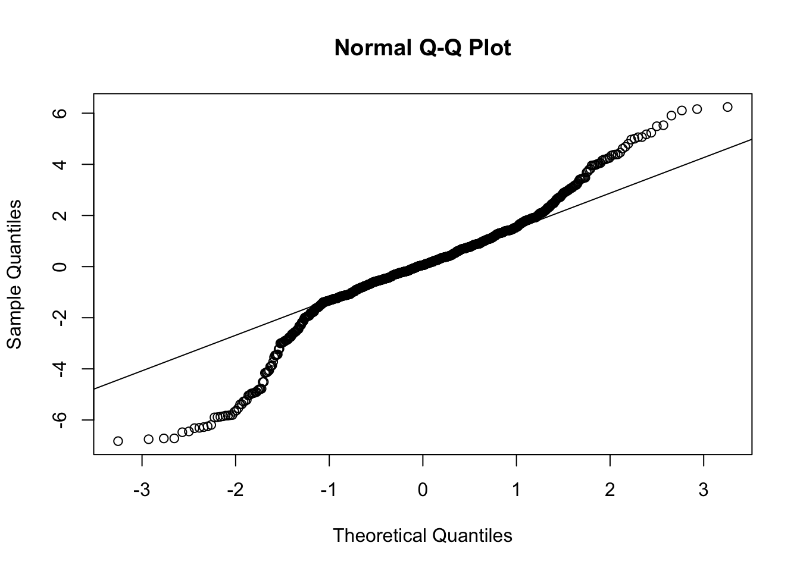
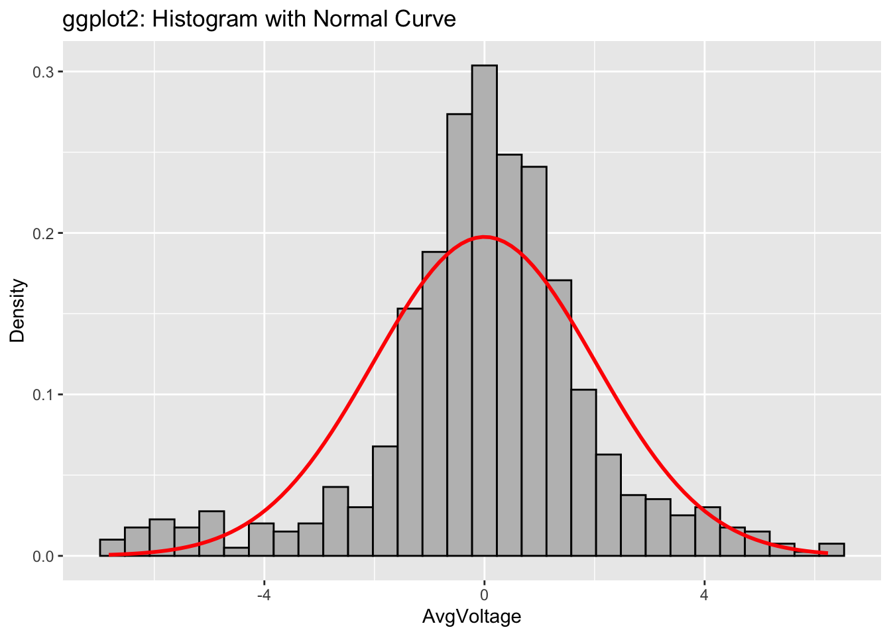

Call:
lm(formula = AvgVoltage ~ Condition * roi, data = eegDataAveraged)
Residuals:
Min 1Q Median 3Q Max
-6.8272 -0.8436 0.0566 1.0315 6.2423
Coefficients:
Estimate Std. Error t value Pr(>|t|)
(Intercept) -1.2112 0.2007 -6.034 2.36e-09 ***
ConditionCondA -0.8395 0.2839 -2.957 0.00319 **
ConditionCondB 0.7862 0.2839 2.769 0.00573 **
ConditionCondC 1.1510 0.2839 4.054 5.47e-05 ***
roiCentral -0.4165 0.2736 -1.523 0.12821
ConditionCondA:roiCentral 0.4119 0.3869 1.065 0.28728
ConditionCondB:roiCentral 0.6341 0.3869 1.639 0.10156
ConditionCondC:roiCentral 0.7439 0.3869 1.923 0.05483 .
---
Signif. codes: 0 '***' 0.001 '**' 0.01 '*' 0.05 '.' 0.1 ' ' 1
Residual standard error: 2.027 on 876 degrees of freedom
Multiple R-squared: 0.159, Adjusted R-squared: 0.1523
F-statistic: 23.65 on 7 and 876 DF, p-value: < 2.2e-16Assignment #6 - An EEG Processing Pipeline II - Answer Key
In this key, we continue the exercise from assignment#5 with the final task to perform a model with interactions.
For the steps to create the required data frame, see the Assignment#5 key.
The data frame eegDataAveraged created in Assignment$5 contains the following columns:
Subject: Factor with 17 levels from “1” to “17” indicating the participant
Condition: Factor with 4 levels: (“CondA”, “CondB”, “CondC” and “CondD”) indicating the experimental condition.
Electrode: Factor with 13 levels (“C1” …“Cz”, “F1” , …” Fz”) indicating the electrode of measure
roi: Factor with 2 levels (“Anterior”, “Central”), indicating a grouped electrodes region of interest
AvgVoltage: Numerical variable with the voltage measured at each electrode on the EEG collection averaged in the time window 250 to 550ms to investigate the N400 ERP component.
Task #5 (Assignment#6 / After Workgroup 6): Multiple Regression with two factors
Task #5.1: Model with interactions
To model the N400 window average voltage from the previous tasks we include now the two predictors: Condition and ROI and their interaction.
From the resulting model fit, we can make the following observations:
The intercept represents the reference case: Condition D in the Anterior region.
The coefficients for the Condition dummy variables represent the change from the reference Condition D in the Anterior Region.
The coefficient for
roiCentralrepresents the change of Condition D from the anterior to the central region.The interaction coefficients represent the additional change with respect to the Condition coefficients from the Anterior to the Central region.
The values indicate a significant change between the Conditions and the reference, without a significant impact on whether it is in the anterior or central region, with the exception of Condition C, that shows a nearly significant difference.
Let’s visualize this interaction using the ggeffects package and the predict response function:
library(ggeffects)
# predict responses based on the fitted model:
pred_voltage<-predict_response(mEEG_interaction,terms=c("Condition","roi"))
plot(pred_voltage)
The plot shows that there are differences between conditions, mostly independent from the region although some larger differences are apparent in the reference Condition D and Condition C.
To test these differences we perform post-hoc tests. I illustrate how to do it below with emmeans package:
$emmeans
roi = Anterior:
Condition emmean SE df lower.CL upper.CL
CondD -1.2112 0.201 876 -1.6052 -0.8173
CondA -2.0507 0.201 876 -2.4447 -1.6568
CondB -0.4250 0.201 876 -0.8190 -0.0311
CondC -0.0603 0.201 876 -0.4543 0.3337
roi = Central:
Condition emmean SE df lower.CL upper.CL
CondD -1.6278 0.186 876 -1.9925 -1.2630
CondA -2.0554 0.186 876 -2.4201 -1.6906
CondB -0.2075 0.186 876 -0.5722 0.1573
CondC 0.2671 0.186 876 -0.0977 0.6318
Confidence level used: 0.95
$contrasts
roi = Anterior:
contrast estimate SE df t.ratio p.value
CondD - CondA 0.840 0.284 876 2.957 0.0168
CondD - CondB -0.786 0.284 876 -2.769 0.0292
CondD - CondC -1.151 0.284 876 -4.054 0.0003
CondA - CondB -1.626 0.284 876 -5.727 <.0001
CondA - CondC -1.990 0.284 876 -7.012 <.0001
CondB - CondC -0.365 0.284 876 -1.285 0.5728
roi = Central:
contrast estimate SE df t.ratio p.value
CondD - CondA 0.428 0.263 876 1.627 0.3640
CondD - CondB -1.420 0.263 876 -5.404 <.0001
CondD - CondC -1.895 0.263 876 -7.209 <.0001
CondA - CondB -1.848 0.263 876 -7.031 <.0001
CondA - CondC -2.322 0.263 876 -8.836 <.0001
CondB - CondC -0.475 0.263 876 -1.806 0.2714
P value adjustment: tukey method for comparing a family of 4 estimates With this function, we asked emmeans to perform a pairwise comparison between the levels of condition (pairwise~Condition) at each of the levels of the roi variable.
Considering only the comparisons to the reference level D, we can observe:
There is a significant difference between Condition C and the control condition D both in Central and Anterior region.
There is a significant difference between Condition B and the control condition D in both Central and Anterior region.
The difference between Condition A and Condition D is only significant in the Anterior region (\(D=0.84,SE=0.284,t(876)=2.957, p=.017\)).
The last contrast indicates a potential weak interaction between roi and Condition however, this is not clearly visible in the model.
Important
What do we do in these cases, when we have a non-significant interaction, but potentially significant post-hoc test?
You should report the interaction as non-significant or nearly significant. Using the pairwise comparisons only as a justification for the effect will be considered inadequate, and probably more power will be required in the experiment to ensure the effect is real.
To illustrate this last point, let’s compare the model above with roi factor and a model considering only the Condition, independent from the region on the scalp.
Analysis of Variance Table
Model 1: AvgVoltage ~ Condition * roi
Model 2: AvgVoltage ~ Condition
Res.Df RSS Df Sum of Sq F Pr(>F)
1 876 3600.5
2 880 3618.5 -4 -18.015 1.0958 0.3574AIC(mEEG_interaction,mCond) df AIC
mEEG_interaction 9 3768.136
mCond 5 3764.548BIC(mEEG_interaction,mCond) df BIC
mEEG_interaction 9 3811.196
mCond 5 3788.470All three test favor the simple model with only Condition as a predictor, so no topological effect was present.
Finally, we check the model assumptions:

shapiro.test(mEEG_interaction$residuals)
Shapiro-Wilk normality test
data: mEEG_interaction$residuals
W = 0.94714, p-value < 2.2e-16Non-constant Variance Score Test
Variance formula: ~ fitted.values
Chisquare = 0.227006, Df = 1, p = 0.63375The qqplot indicates a violation of the normality of residuals. See below how you can visualize the residuals compared to a normal distribution with same mean and standard deviation.
library(tidyverse)
x<-mEEG_interaction$residuals
ggplot(data.frame(x), aes(x=x)) +
geom_histogram(aes(y = after_stat(density)),
fill="grey",
color="black") +
stat_function(fun = dnorm,
args = list(mean = mean(x),
sd = sd(x)),
color = "red",
size = 1) +
labs(title="ggplot2: Histogram with Normal Curve",
x="AvgVoltage",
y="Density")Warning: Using `size` aesthetic for lines was deprecated in ggplot2 3.4.0.
ℹ Please use `linewidth` instead.`stat_bin()` using `bins = 30`. Pick better value with `binwidth`.
Important
The data is more peaked than a normal distribution and would likely require a data transformation data filtering to truncate outliers. Very often work performed to analyze data (even published) ignore or don’t indicate a caveat on the model assumptions, which could lead to incorrect conclusions or invalid interpretation of the results.
Task #5.2: Report the analysis
We could report the results as follows considering the confidence interval for the coefficients extracted with confint(mEEG_interaction)
We assessed the presence of a significant N400 ERP component in the manipulated experimental conditions (CondA, CondB and CondC) in comparison to a reference control (CondD). In order to do that we fitted a linear model to predict the measured voltage in mV averaged in the time window -250 to 450ms over a series of electrodes based on the Condition and including a topographical predictor encoding the Region of Interest (roi) to assess the location of the effect in the brain. roi factor was encoded with two levels: Anterior (corresponding to 6 frontal electrodes - F1, F3, F4, F5, F6, Fz) and Central (corresponding to 7 central electrodes - C1, C2, C3, C4, C5, C6, Cz).
The model explains a statistical significant and moderate proportion of variance (\(F(7,876)=23.65,p<.001,R^2=0.16,R^2_{adj}=0.15\)). The variables were coded using treatment coding with the intercept corresponding to control Condition = D and roi = Anterior, and fitted at \(b = -1.21,95\%CI[-1.61,-0.82], t(876)=-6.03,p<.001\).
The table below lists the model parameters:
Coefficient
beta Confidence Interval t p Intercept (corresponding to Condition D, roi = Anterior) -1.21 [-1.61, -0.82] t(876) = -6.03 p<.001 ConditionCondA -0.84 [-1.40, -0.28] t(876) = -2.96 p = .003 ConditionCondB 0.79 [0.23, 1.34] t(876) = 2.77 p = .006 ConditionCondC 1.15 [0.59, 1.71] t(876) = 4.05 p <.001 roiCentral -0.42 [-0.95, 0.12] t(876) = -1.52 p=.128 ConditionCondA:roiCentral 0.41 [-0.35, 1.17] t(876) = 1.06 p=.287 ConditionCondB:roiCentral 0.63 [-0.12, 1.39] t(876) = 1.64 p=.102 ConditionCondC:roiCentral 0.74 [-0.02, 1.50] t(876) = 1.92 p=.054 The model did not reveal a significant interaction between roi and Condition. Comparison with a model with only Condition as predictor, confirmed that the introduction of the roi predictor and interaction did not improve the model fit (\(F(4,880)=1.10,p=.357, AIC_{ConditionOnlyModel} = 3764.44, AIC_{interactionModel}=3768.13\)
A main effect of Condition was identified with all three Conditions A (\(M=-2.05ms,SE=0.14,95\%CI=[-2.3,-1.78]\)), B (\(M=-0.32ms,SE=0.14,95\%CI=[-0.58,-0.05]\)), C ( \(M=0.10ms,SE=0.14,95\%CI=[-0.16,0.37]\)) showed a significant difference to the reference condition D (\(M=-1.42ms,SE=0.14,95\%CI=[-1.69,-1.15]\)) as verified by post-hoc t-tests corrected for multiple comparisons using Tukey correction.
The nature of the effect, however displayed a different nature on the three conditions. While in Condition A was more negative than in the Control condition D, as expected for a N400 negativity, this was not the case in conditions B and C, where the data was more positive than in Condition A.
Difference t p ConD - CondA 0.63 t(876) = 3.275 p=.006 ConD - CondB -1.10 t(876) = -5.70 p <.001 ConD - CondC -1.52 t(876) = -7.87 p <.001
Model assumptions checking revealed deviations from the normality assumptions on both models that would require a more detailed look at the data outliers or likely an increase of the number of subjects in the study.